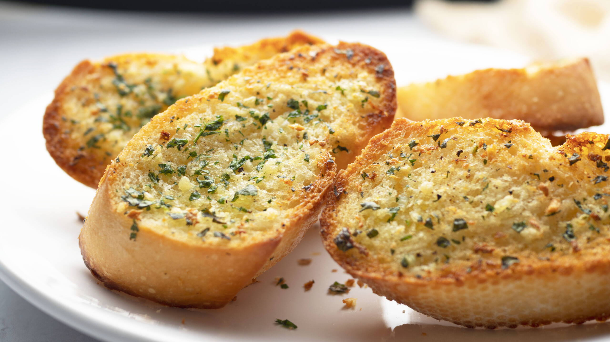

Garlic BreadRecipe

- ½ cup butter, melted
- 1 teaspoon garlic salt
- ¼ teaspoon dried rosemary
- ⅛ teaspoon dried basil
- ⅛ teaspoon dried thyme
- ⅛ teaspoon garlic powder
- 1 tablespoon grated Parmesan cheese
- 1 (1 pound) loaf French bread, halved lengthwise
- Preheat oven to 300 degrees F (150 degrees C).
- In a small bowl, mix butter, garlic salt, rosemary, basil, thyme, garlic powder and Parmesan cheese.
- Spread each half of the French bread with equal portions of the butter mixture. Sprinkle with additional Parmesan cheese, if desired.
- Place bread halves, crusts down, on a medium baking sheet. Bake in the preheated oven 10 to 12 minutes, or until the edges are very lightly browned.
Go Back Home